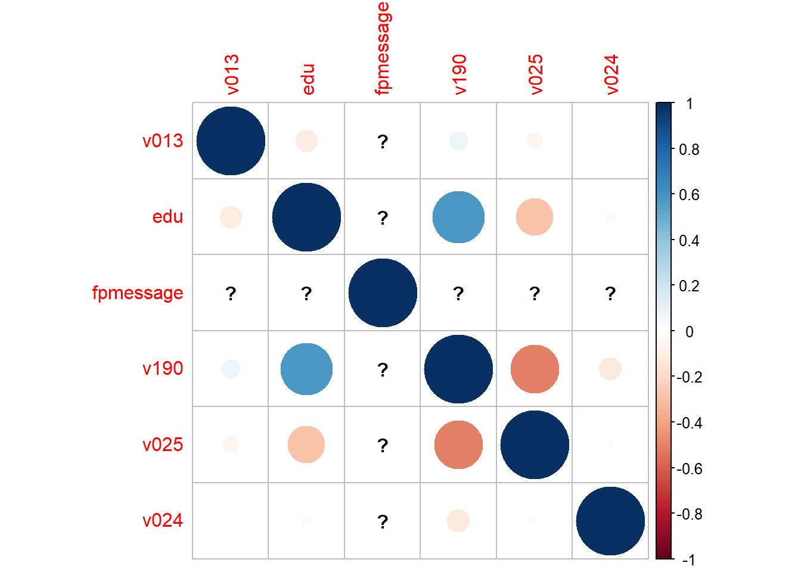

Does modern contraceptive use among women currently in a union differ by family planning media exposure after controlling for socio-demographic variables
I have written PDHS using R few weeks back to indicate that how one can easily use DHS data with R. This post is next phase of the earlier post. I am using in this post is IR which is the individual (women’s) recode file. For more details about files you can visit dhs. USAID main sponsoring agency of DHS data has recently started using open community software for DHS data. I am using it for Pakistani data 2017-18 to explore whether media has a role in use of modern family planning methods or not.
DHS data in R
Please have the dataset downloaded and ready to use. I shall use the IR file.You can download the model dataset here For the code below to work, you must save the dataset in the same folder as your R scripts.
Install and load the packages you need. You only need to install packages once. After installing a package you can load the package using the library command.
Load relevant packages
Code
library(expss) library(writexl)library(tidyverse) # its an umbrella library containing 9 important and widely used packages of Rlibrary(naniar) # to use replace_with_na functionlibrary(haven) # to read STATA/SPSS datalibrary(here) # to check what is your file pathlibrary(labelled) # to get labels of vairableslibrary(pollster)library(gt) # to get tableslibrary(gtExtras)library(survey) # For analysis of complex survey data setshere::here() # check your path/directory and make sure your data is in this directory
[1] "D:/RepTemplates/pdhsurvey"
Load data
As I have my data in a folder data , so I am giving a parth inside here of the relevant folder and then data.
Code
# open your dataset#pkir <- read_dta(here("data","PKIR71FL.dta"))# # save(pkir, file = 'data/pkir.RData') #you can save data in R. It will reduce file size and if its correctly save, you can just click on data and it will be uploaded with the command as follows:load("D:/RepTemplates/pdhs/data/pkir.RData")pkir |>dim()
[1] 15068 5331
Modern contraceptive use
To recode modern contraceptive use into a binary variable, first I check category labels of v313 representing methods used for family planning.
Code
print_labels(pkir$v313) # print_labels command for variable labels
Labels:
value label
0 no method
1 folkloric method
2 traditional method
3 modern method
Outcome variable
Recode v313 as 1 if female is using modern method and 0 if otherwise. For this I use mutate for creating a new variable modfp. To create survey weight variables wtand finally a table of summary statistics is calculated.
Code
# creating a new categorical variable using mutate and case_when commandspkir <- pkir |>mutate(modfp =case_when(v313 ==3~1, v313 <3~0 )) |>set_value_labels(modfp =c(yes =1, no =0)) |>set_variable_labels(modfp ="Currently used any modern method")# creating the sampling weight variable. pkir <- pkir |>mutate(wt=v005/1000000)#pkir$wt <- pkir$v005/1000000# check with final report Table 7.3topline(pkir, modfp, wt ) |>gt() |>gt_theme_538()
Currently used any modern method
Frequency
Percent
Valid Percent
Cumulative Percent
no
9353.449
75.65067
75.65067
75.65067
yes
3010.551
24.34933
24.34933
100.00000
In the above code we use NA_integer_ to replace as missing any values where women are not currently in use. There are 24% females who are using modern family planning methods.
Socio-demographic variables
age
Socio-demographic variables
Variable
Code
Col3
Age
v013
Secondary and higer categories
v106
Recodes into three categories
wealth quintile
v190
region
v024
family planning message
v384
union
v502
education: recode v106 to combine secondary and higher categories
pkir <- pkir %>%mutate(fpmessage =ifelse(v384a==1| v384b==1| v384c==1, 1, 0)) %>%set_value_labels(fpmessage =c(yes =1, no =0)) %>%set_variable_labels(fpmessage ="Exposed to TV, radio, or paper media sources")
Dealing with missing values
For all variables, replace as missing if woman is not currently in a union, and reduce your dataset to mydata
Setting the survey design using the svydesign command from the survey package the survey design will be saved in an object named mysurvey, you can change this name to another name
This table will include all the variables in your analysis (would be your Table 1 of your results). The variables are tabulated among women currently in a union since this is our analytical sample you can use the following code for checking the proportions of a variable
Code
prop.table(svytable(~modfp, mysurvey))
modfp
0 1
0.7498149 0.2501851
To export a table of the weighted percentages of all your variables you can use the following code
Code
# dummy var for all women currently in a unionmydata <- mydata %>%mutate(fp_all =case_when(v007>0~"all"))# set expss package options to show one decimal placeexpss_digits(digits=1)tab<- mydata %>%cross_cpct(cell_vars =list(modfp,v013,edu,fpmessage,v190,v025,v024),col_vars =list(fp_all),weight = wt,expss_digits(digits=1)) tab |>gt()
row_labels
all
1|Currently used any modern method|no
74.981488
1|Currently used any modern method|yes
25.018512
1|Currently used any modern method|#Total cases
11902.000000
1|age in 5-year groups|15-19
5.007945
1|age in 5-year groups|20-24
15.676015
1|age in 5-year groups|25-29
21.078768
1|age in 5-year groups|30-34
19.811211
1|age in 5-year groups|35-39
17.270140
1|age in 5-year groups|40-44
11.185964
1|age in 5-year groups|45-49
9.969957
1|age in 5-year groups|#Total cases
11902.000000
1|education level|none
48.791616
1|education level|primary
16.459991
1|education level|sec+
34.748393
1|education level|#Total cases
11902.000000
1|Exposed to TV, radio, or paper media sources|no
75.917559
1|Exposed to TV, radio, or paper media sources|yes
24.082441
1|Exposed to TV, radio, or paper media sources|#Total cases
11901.000000
1|wealth index combined|poorest
18.218334
1|wealth index combined|poorer
19.420927
1|wealth index combined|middle
20.346496
1|wealth index combined|richer
20.917925
1|wealth index combined|richest
21.096318
1|wealth index combined|#Total cases
11902.000000
1|type of place of residence|urban
36.766003
1|type of place of residence|rural
63.233997
1|type of place of residence|#Total cases
11902.000000
1|region|punjab
53.055221
1|region|sindh
23.243249
1|region|kpk
15.598670
1|region|balochistan
5.297360
1|region|gb
NA
1|region|ict
0.872713
1|region|ajk
NA
1|region|fata
1.932786
1|region|#Total cases
11902.000000
Note that this table gives you weighted percentages but does not produce confidence intervals. Crosstabulations of each variable with the outcome variables (Table 2 of your results)
Crosstabulation of modfp (modern FP use) and place of residence (v025)
Code
svyby(~modfp, by =~v025 , design=mysurvey, FUN=svymean, vartype=c("se", "ci"))
To do this for several variables at once, you can do the following
List of variables to crosstabulate with the outcome
Code
variables <-c("v013","edu","fpmessage", "v190","v025","v024") results <-list() # Empty list to store the crosstabulation results# Loop through the variables# for (var in variables) {# # Crosstabulation using svyby# crosstab <- svyby(~ modfp, by = as.formula(paste("~", var)), design = mysurvey, FUN = svymean, vartype = c("se", "ci"))# # chi_square <- svychisq(as.formula(paste("~ modfp +", var)), design = mysurvey)# # # Store results in list# results[[var]] <- list(crosstab = crosstab, chi_square = chi_square)# }
Access the crosstabulation results for each variable
Code
for (var in variables) {print(paste("Crosstabulation for", var))print(results[[var]])}
[1] "Crosstabulation for v013"
NULL
[1] "Crosstabulation for edu"
NULL
[1] "Crosstabulation for fpmessage"
NULL
[1] "Crosstabulation for v190"
NULL
[1] "Crosstabulation for v025"
NULL
[1] "Crosstabulation for v024"
NULL
Interpretation:
The results of the crosstabulation show that all variables were significantly associated with modern contraceptive use. To produce a table of just the percentages by modfp (i.e. no C.I.s)
1|Exposed to TV, radio, or paper media sources|yes
70.65805
29.341950
1|Exposed to TV, radio, or paper media sources|#Total cases
9111.00000
2790.000000
1|wealth index combined|poorest
82.89327
17.106734
1|wealth index combined|poorer
77.42353
22.576471
1|wealth index combined|middle
73.10917
26.890829
1|wealth index combined|richer
72.37341
27.626594
1|wealth index combined|richest
70.29274
29.707262
1|wealth index combined|#Total cases
9112.00000
2790.000000
1|type of place of residence|urban
71.22775
28.772254
1|type of place of residence|rural
77.16402
22.835982
1|type of place of residence|#Total cases
9112.00000
2790.000000
1|region|punjab
72.82300
27.177002
1|region|sindh
75.58088
24.419122
1|region|kpk
76.83004
23.169960
1|region|balochistan
85.98576
14.014239
1|region|gb
NA
NA
1|region|ict
65.33211
34.667891
1|region|ajk
NA
NA
1|region|fata
86.30192
13.698080
1|region|#Total cases
9112.00000
2790.000000
1|#Total
74.98149
25.018512
1|#Total cases
9112.00000
2790.000000
Logistic Regressions
We will use the svyglm function from the survey package to fit regression models. This fits generalized linear models.
Code
# first check for correlations cordata <- mydata[, variables]# Calculate the correlation matrixcor_matrix <-cor(cordata)print(cor_matrix)
v013 edu fpmessage v190 v025 v024
v013 1.000000000 -0.1014288 NA 0.0715958 -0.05514208 -0.003774969
edu -0.101428787 1.0000000 NA 0.5745587 -0.28870752 -0.023242999
fpmessage NA NA 1 NA NA NA
v190 0.071595800 0.5745587 NA 1.0000000 -0.50326790 -0.110364231
v025 -0.055142079 -0.2887075 NA -0.5032679 1.00000000 0.013657264
v024 -0.003774969 -0.0232430 NA -0.1103642 0.01365726 1.000000000
Correlation plot
Code
library(corrplot)
Warning: package 'corrplot' was built under R version 4.3.1
corrplot 0.92 loaded
Code
corrplot(cor_matrix)

There is a relatively high correlation between v025 and v190 that the researcher may need to be cautious of Unadjusted regression first we will fit an unadjusted logistic regression for family planning message exposure unadjusted with exposure to family planning messages. Ignore the warning message!
# to get ORsORreg1 <-exp(reg1$coefficients )ORreg1
(Intercept) fpmessage
0.3097217 1.3407745
Interpretation
The unadjusted result shows that women currently in a union who have heard a FP message through one of the three media sources have almost twice the odds of using modern a contraceptive method compared to women with no FP message exposure.
Adjusted regression
Now we will include all the background variables with our main variable of interest note that for binary variables, you do not need to use as.factor but for categorial variables, you should add as.factor(var) to indicate that the variable is categorical and not continuous.
After controlling for other variables, exposure to FP messages was found to be associated with modern contraceptive use among women currently in a union. Women with FP message exposure had 1.1 times higher odds compared to women with no exposure in using modern contraceptive methods. Though its not significant at usual significance level but literature indicates that if a variable is highly important then statistics value greater than 1 is also considered significant. This is an exploratory analysis and one should work in depth before reaching at policy results.